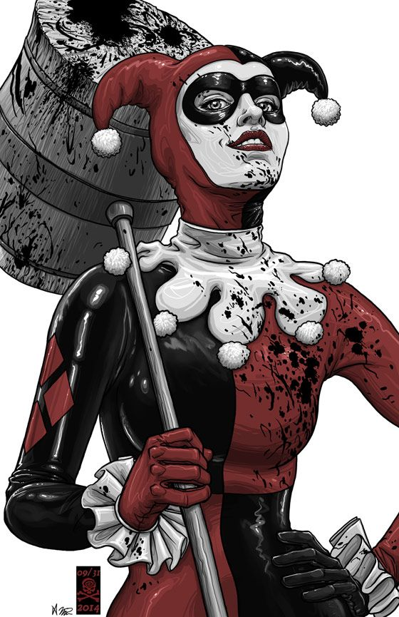
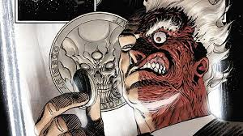

Swear to me! Seven hundred twelve counts of extortion. Eight hundred and forty-nine counts of racketeering. Two hundred and forty-six counts of fraud. Eighty-seven counts of conspiracy murder.Five hundred and twenty-seven counts of obstruction of justice. How do the defendants plead? Tomorrow, you will be released. If you are bored of brawling with thieves and want to achieve something there is a rare blue flower that grows on the eastern slopes. Pick one of these flowers. If you can carry it to the top of the mountain, you may find what you were looking for in the first place.
You fight like a younger man, there's nothing held back. It's admirable, but mistaken.
The training is nothing! Will is everything! The will to act.
I give a damn because a good man once made me responsible for what was most precious to him in the whole world.
I will go back to Gotham and I will fight men Iike this but I will not become an executioner.
Do you want my opinion? You need to lighten up.
Maybe someday, when Gotham no longer needs Batman I'll see him again. I just the took to calling it the Bat. And yes Mr. Wayne, it does come in black. You are in hell, little man. And I am the devil. It doesn't matter who we are. What matters is our plan. It's ends here. Criminals thrive on the indulgence of society's understanding.
I believe whatever doesn't kill you simply makes you... stranger.
Do you wanna know why I use a knife? Guns are too quick. You can't savor all the... little emotions. You see, in their last moments, people show you who they really are. So in a way, I knew your friends better than you ever did. Would you like to know which of them were cowards?
Oh, hee-hee, aha. Ha, ooh, hee, ha-ha, ha-ha. And I thought my jokes were bad.
Do I really look like a guy with a plan?
You wanna know how I got these scars? My father was... a drinker, and a fiend. And one night, he goes off crazier than usual. Mommy gets the kitchen knife to defend herself. He doesn't like that, not one bit. So, me watching he takes the knife to her, laughing while he does it. He turns to me and he says: "Why so serious?". He comes at me with the knife "Why so serious?". He sticks the blade in my mouth. "Let's put a smile on that face." and... Why so serious?
I know why you choose to have your little, ahem... group-therapy sessions in broad daylight. I know why you're afraid to go out at night. The Batman.
Introduce a little anarchy, upset the established order and everything becomes chaos. I'm an agent of chaos. Oh, and you know the thing about chaos? It's fair.
I had a vision of a world without Batman. The Mob ground out a little profit and the police tried to shut them down one block at a time. And it was so boring. I've had a change of heart. I don't want Mr Reese spoiling everything but why should I have all the fun? Let's give someone else a chance. If Coleman Reese isn't dead in 60 minutes then I blow up a hospital.
If you're good at something, never do it for free.
This town deserves a better class of criminal and I'm gonna give it to them. Tell your men they work for me now. This is my city.
Now, our operation is small but there is a lot of potential for aggressive expansion. So which of you fine gentlemen would like to join our team? Oh. There's only one spot open right now, so we're gonna have... tryouts.
It's simple. We, uh, kill the Batman.
You see, I'm a guy of simple taste. I enjoy dynamite and gunpowder and gasoline. You want order in Gotham. Batman must take off his mask and turn himself in. Oh, and every day he doesn't, people will die. Starting tonight. I'm a man of my word.
Look around you. You'll see two councilmen, a union official, couple off-duty cops and a judge. I wouldn't have a second's hesitation of blowing your head off in front of them. Now, that's power you can't buy. That's the power of fear.
No gun? I'm insulted.
Never underestimate Gotham City. People get mugged coming home from work every day of the week. Sometimes things just go bad.
You're taller than you look in the tabIoids, Mr. Wayne.